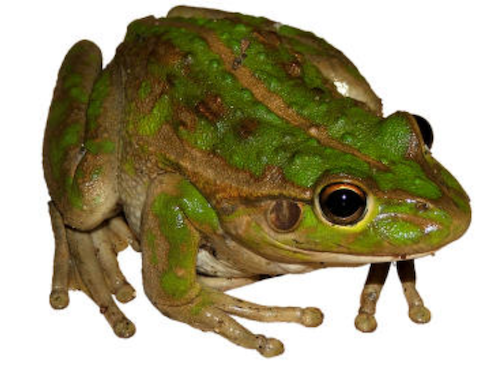
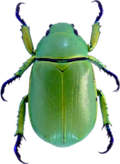
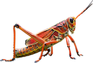
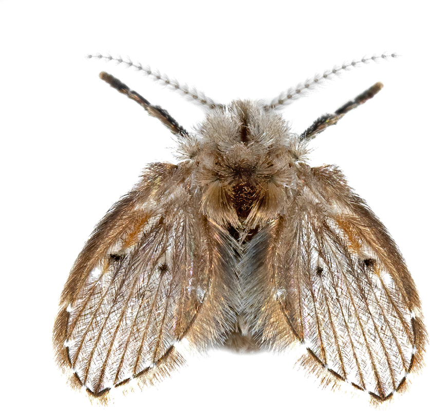
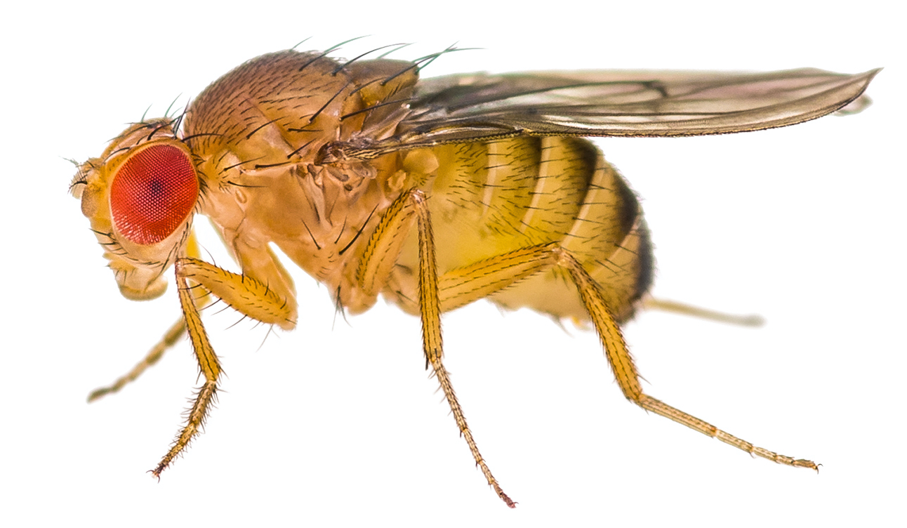

Karyotype Data
Cytogenetic data is perhaps the most basic information about a genome (i.e., how many discrete chromosomes is the genome divided among, what type of sex chromosomes are present). Despite the fundamental nature of this data, many questions surrounding the evolution of genomes at this level remain unanswered. Furthermore, as we move into an era of ever more affordable sequencing, this is critical preliminary information that should be evaluated before sequencing and may even suggest particularly attractive targets for future sequencing efforts. Unfortunately, cytogenetic data is often scattered among many journals and often behind paywalls. For these reasons, we have built databases that make this data publicly available.
|
 Amphibian Karyotype Database 1 2124 records |
 Coleoptera Karyotype Database 2 4960 records |
 Polyneoptera Database 3 823 records |
|---|---|---|
|
 Diptera Karyotype Database 4 3443 records |
 Drosophila Karyotype Database 4 1247 records |
Mammal Karyotype Database 5 1440 records |
These databases are supported by the Blackmon Lab at Texas A&M University and the Demuth Lab at The University of Texas at Arlington.
1 Perkins, R.D., Gamboa, J.R., Jonika, M.M., Lo, J., Shum, A., Adams, R.H. and Blackmon, H., 2019. A database of amphibian karyotypes. Chromosome Research, 27(4), pp. 313-319.
2 Blackmon, H. and Demuth, J.P., 2015. Coleoptera karyotype database. Coleopt. Bull, 69, pp. 174-175.
3 Sylvester, T., Hjelmen, C.E., Hanrahan, S.J., Lenhart, P.A., Johnston, J.S. and Blackmon, H., 2020. Lineage-specific patterns of chromosome evolution are the rule not the exception in Polyneoptera insects. Proceedings of the Royal Society B, 287(1935), p.20201388.
4 Morelli, M.W., H. Blackmon, and C.E. Hjelmen. Diptera and Drosophila Karyotype database. Frontiers in Ecology and Evolution. 10.3389
1 Perkins, R.D., Gamboa, J.R., Jonika, M.M., Lo, J., Shum, A., Adams, R.H. and Blackmon, H., 2019. A database of amphibian karyotypes. Chromosome Research, 27(4), pp. 313-319.
2 Blackmon, H. and Demuth, J.P., 2015. Coleoptera karyotype database. Coleopt. Bull, 69, pp. 174-175.
3 Sylvester, T., Hjelmen, C.E., Hanrahan, S.J., Lenhart, P.A., Johnston, J.S. and Blackmon, H., 2020. Lineage-specific patterns of chromosome evolution are the rule not the exception in Polyneoptera insects. Proceedings of the Royal Society B, 287(1935), p.20201388.
4 Morelli, M.W., H. Blackmon, and C.E. Hjelmen. Diptera and Drosophila Karyotype database. Frontiers in Ecology and Evolution. 10.3389